しくみ（案）
- ノーマル：既存6体＋新6体＝12体から等確率で出現
- レア：各4%（2体で計8%）。倒すと
potion2「大きなしずく」またはether2「大きなマナの実」をドロップ（r1→potion2、r2→ether2） - 超レア：1%。倒すと
potion3「ひかりのしずく」かether3「星のマナの実」のどちらか＋ゴールド（通常戦の約5倍） - レア・超レアにはドロップ以外にも経験値1.5倍／3倍などの特典を付けてもよい（要検討）
- 図鑑：1単元あたり 11（ノーマル6＋番人4＋ボス1）→ 20（＋ノーマル6・レア2・超レア1）
- 画像の保存名：
img/rikaria/enemy/<単元ID>-7〜12.webp、-r1.webp、-r2.webp、-sr.webp（各カードに正確な名前を表示） - ChatGPTに生成させるときは、同じ単元の既存モンスター画像を1枚添付してからプロンプトを貼る
物質｜まどろみの錬金工房


📘 密度＝質量÷体積。物質ごとに決まった値
🎨 四角いブロック体に目盛り付き。重そうにどっしり座る
保存名: img/rikaria/enemy/matter-7.webp
📘 ろ過：ろ紙で固体と液体を分ける
🎨 ろうと形の帽子に折ったろ紙のマント
保存名: img/rikaria/enemy/matter-8.webp
📘 再結晶：溶かした物質を冷やして結晶で取り出す
🎨 透明な六角柱の結晶がとげのように生えたちびっこ
保存名: img/rikaria/enemy/matter-9.webp
📘 蒸留：沸点の差で液体を分ける
🎨 丸底フラスコの胴体から湯気のしっぽが伸びる
保存名: img/rikaria/enemy/matter-10.webp
📘 状態変化：固体・液体・気体の変化で体積は変わるが質量は変わらない
🎨 半分氷・半分湯気の丸いしずく
保存名: img/rikaria/enemy/matter-11.webp
📘 酸素：ものを燃やすはたらきがある気体
🎨 青い風船の体に小さな炎のアホ毛
保存名: img/rikaria/enemy/matter-12.webp
📘 ボイルの法則：気体の体積と圧力の関係（発展・気体の性質）
🎨 ピストン付きの風船ボディ。ぎゅっと押されてほっぺがふくらむ
保存名: img/rikaria/enemy/matter-r1.webp
📘 ラボアジエ：燃焼と質量保存を確かめた化学の父
🎨 かつら風の白い巻き毛に小さな天秤を持つ紳士風モンスター
保存名: img/rikaria/enemy/matter-r2.webp
📘 絶対零度（約−273℃）：物質の温度の下限
🎨 氷の結晶でできた王冠と透き通ったクリスタルの体
保存名: img/rikaria/enemy/matter-sr.webp
分類｜ささやきの森
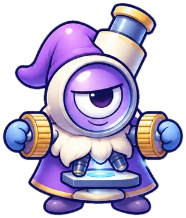
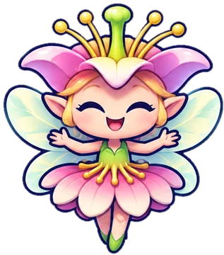
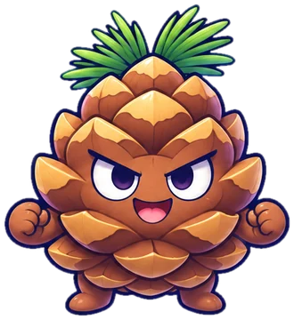
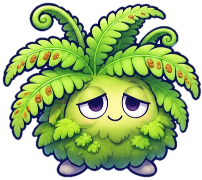
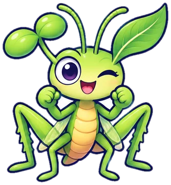
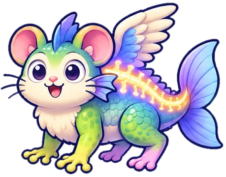
📘 藻類など。種子をつくらず胞子でふえる仲間の比較（シダ・コケ類）
🎨 ふわふわの緑のコケじゅうたんに丸い目
保存名: img/rikaria/enemy/classify-7.webp
📘 ひげ根：単子葉類の根のつくり
🎨 細い根がひげのように広がる球根モンスター
保存名: img/rikaria/enemy/classify-8.webp
📘 無脊椎動物：背骨のない動物（節足動物・軟体動物）
🎨 カニのはさみとイカの足を持つやわらかボディ
保存名: img/rikaria/enemy/classify-9.webp
📘 は虫類：うろこを持ち陸上に殻のある卵をうむ
🎨 小さなトカゲ型、背中にうろこ模様
保存名: img/rikaria/enemy/classify-10.webp
📘 双子葉類：葉脈が網目状、主根と側根
🎨 ふたばの耳と網目もようの葉っぱ体
保存名: img/rikaria/enemy/classify-11.webp
📘 哺乳類：胎生で子を乳で育てる
🎨 ふわふわ毛の子ネズミがミルク瓶を抱く
保存名: img/rikaria/enemy/classify-12.webp
📘 リンネ：生物の分類と学名の方法を確立
🎨 古い図鑑をかかえたフクロウ型モンスター
保存名: img/rikaria/enemy/classify-r1.webp
📘 イチョウ：裸子植物の生きた化石
🎨 扇形のイチョウの葉っぱの体、ぎんなんのイヤリング
保存名: img/rikaria/enemy/classify-r2.webp
📘 シーラカンス：生きた化石として知られる魚
🎨 青く輝くうろこの古代魚、ひれが手足のよう
保存名: img/rikaria/enemy/classify-sr.webp
音・光・力｜ひびきの洞窟
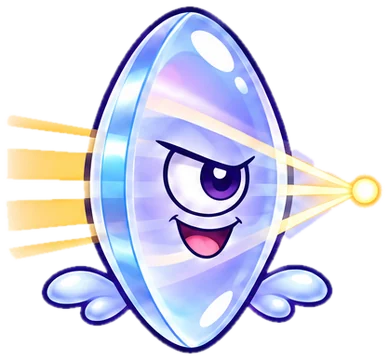
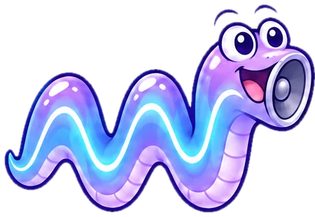
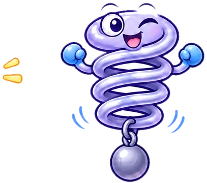
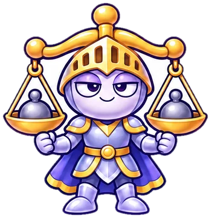
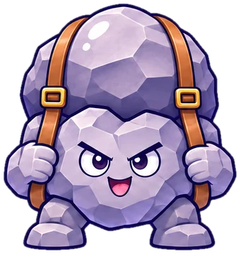
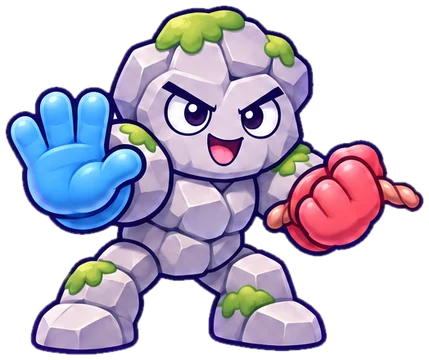
📘 実像：凸レンズで光が集まってスクリーンにうつる像
🎨 スクリーンを抱えた逆さまの影法師
保存名: img/rikaria/enemy/force-7.webp
📘 全反射：光が水中から空気へ進むとき全部はね返る
🎨 水滴型の体の中で光がキラキラ反射
保存名: img/rikaria/enemy/force-8.webp
📘 振動数：音の高さを決める1秒間の振動の回数
🎨 波線のしっぽをぶるぶる振る音符モンスター
保存名: img/rikaria/enemy/force-9.webp
📘 圧力＝力の大きさ÷面積
🎨 大きな足の裏でどっしり立つスタンプ型
保存名: img/rikaria/enemy/force-10.webp
📘 焦点：凸レンズで光が集まる点
🎨 虫めがねの体の先に光の点がきらり
保存名: img/rikaria/enemy/force-11.webp
📘 作用・反作用：2つの物体が力をおよぼし合う
🎨 手を押し合うふたごのボール
保存名: img/rikaria/enemy/force-12.webp
📘 フックの法則：ばねののびは力に比例
🎨 ばねの体がびよーんと伸びる、ひげの学者風
保存名: img/rikaria/enemy/force-r1.webp
📘 ニュートン：力の単位N、りんごの逸話
🎨 頭にりんごを乗せたトンボ型モンスター
保存名: img/rikaria/enemy/force-r2.webp
📘 プリズムで白色光が虹色に分かれる現象
🎨 三角柱のクリスタルの体から虹の光が広がる
保存名: img/rikaria/enemy/force-sr.webp
大地｜ゆらぎの火山
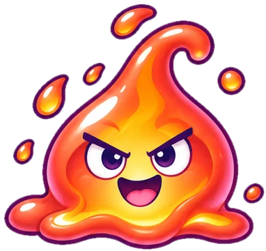
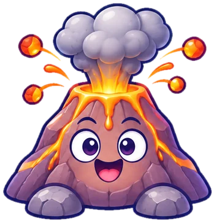
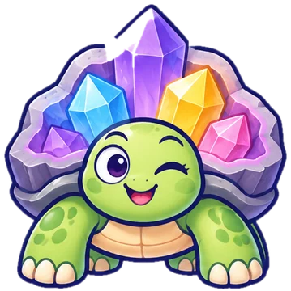
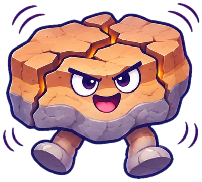
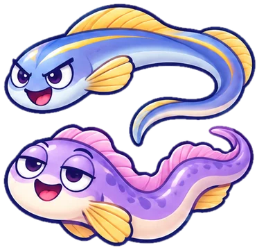
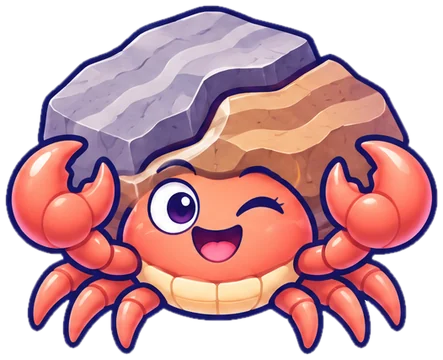
📘 花こう岩：深成岩。白っぽく等粒状組織
🎨 白黒つぶつぶ模様の丸い岩モンスター
保存名: img/rikaria/enemy/earth-7.webp
📘 凝灰岩：火山灰が固まった堆積岩
🎨 灰色のふわっとした粉をまとう四角い石
保存名: img/rikaria/enemy/earth-8.webp
📘 石英：無色透明な鉱物
🎨 透明な六角柱を背負ったやどかり
保存名: img/rikaria/enemy/earth-9.webp
📘 風化：岩石が気温変化や水でもろくなる
🎨 ひびが入ってぽろぽろ崩れるけど笑顔の岩
保存名: img/rikaria/enemy/earth-10.webp
📘 震度：ある地点でのゆれの大きさ
🎨 ぷるぷるゆれるゼリー型、数字なし
保存名: img/rikaria/enemy/earth-11.webp
📘 斑状組織：火山岩の斑晶と石基
🎨 大きなつぶが散らばったモチ型の岩
保存名: img/rikaria/enemy/earth-12.webp
📘 ウェゲナー：大陸移動説を唱えた
🎨 大陸の形をしたパズルピースを背負った探検家風
保存名: img/rikaria/enemy/earth-r1.webp
📘 三葉虫：古生代の示準化石
🎨 三つに分かれた甲羅のダンゴムシ型
保存名: img/rikaria/enemy/earth-r2.webp
📘 ダイヤモンド：地下深くの高圧でできる炭素の鉱物
🎨 ブリリアントカットのダイヤの体
保存名: img/rikaria/enemy/earth-sr.webp
植物と動物｜いのちの大樹
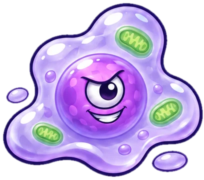
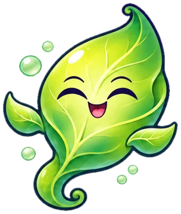
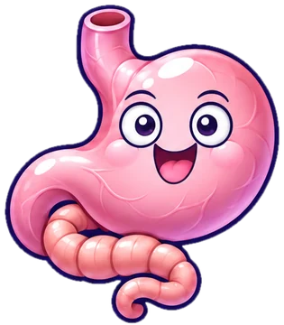
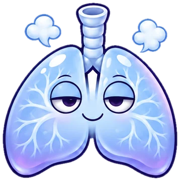
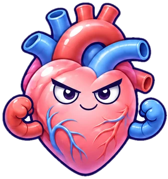
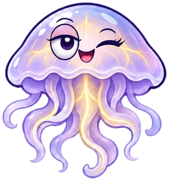
📘 蒸散：気孔から水蒸気が出ていく
🎨 葉っぱの体の穴から湯気がふわふわ
保存名: img/rikaria/enemy/life-7.webp
📘 気孔：2つの孔辺細胞に囲まれたすきま
🎨 くちびる形の2つの細胞が口を開け閉め
保存名: img/rikaria/enemy/life-8.webp
📘 柔毛：小腸の内側で養分を吸収する突起
🎨 ピンクのふさふさ突起がたくさん生えたもこもこ
保存名: img/rikaria/enemy/life-9.webp
📘 じん臓：血液から不要物をこし取る
🎨 そら豆形の赤茶色ボディ、ろ紙のスカーフ
保存名: img/rikaria/enemy/life-10.webp
📘 消化酵素：アミラーゼなどが養分を分解
🎨 はさみを持った小さな粒の妖精
保存名: img/rikaria/enemy/life-11.webp
📘 赤血球：ヘモグロビンで酸素を運ぶ
🎨 まん中がへこんだ赤い円盤、酸素の泡を運ぶ
保存名: img/rikaria/enemy/life-12.webp
📘 ハーベー：血液循環を発見
🎨 心臓形の体に赤と青の矢印のリボン
保存名: img/rikaria/enemy/life-r1.webp
📘 フック：顕微鏡でコルクの細胞を発見・命名
🎨 小さな部屋がならんだコルクの体と顕微鏡の帽子
保存名: img/rikaria/enemy/life-r2.webp
📘 ヒカリゴケ：光を反射して光るコケ
🎨 エメラルドに光るコケのかたまり、ほたるの光
保存名: img/rikaria/enemy/life-sr.webp
化学変化｜結合の溶鉱炉
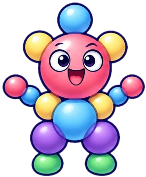
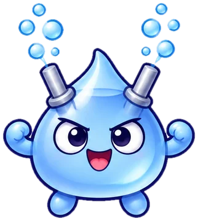
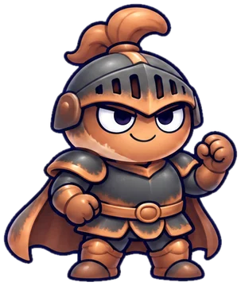
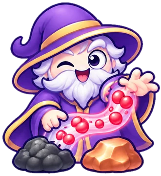
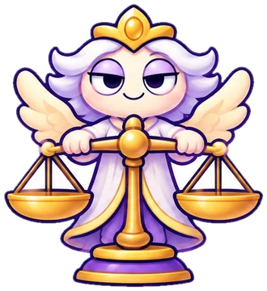
📘 化学反応式：原子の数を左右でそろえる
🎨 矢印の剣と小さな玉の盾を持つ騎士見習い
保存名: img/rikaria/enemy/reaction-7.webp
📘 硫化鉄：鉄と硫黄が結びついてできる
🎨 黒い四角い体に黄色の硫黄のかけら
保存名: img/rikaria/enemy/reaction-8.webp
📘 発熱反応・吸熱反応（カイロや冷却パック）
🎨 半身がカイロ、半身が保冷剤のふたご
保存名: img/rikaria/enemy/reaction-9.webp
📘 原子：それ以上分けられない粒
🎨 色ちがいの玉がつながった分子モデルの体
保存名: img/rikaria/enemy/reaction-10.webp
📘 酸化銅：銅が酸素と結びついた黒い物質
🎨 黒い粉をまとった銅色のコイン
保存名: img/rikaria/enemy/reaction-11.webp
📘 分子：いくつかの原子が結びついた粒
🎨 2つの玉がつながったダンベル型
保存名: img/rikaria/enemy/reaction-12.webp
📘 ドルトン：原子説を唱えた
🎨 丸い原子の玉を連ねたしっぽのトンボ
保存名: img/rikaria/enemy/reaction-r1.webp
📘 メンデレーエフ：元素の周期表をつくった
🎨 周期表柄のマントを着たひげのモンスター
保存名: img/rikaria/enemy/reaction-r2.webp
📘 マグネシウムの燃焼：まぶしい白い光
🎨 まばゆい白い光を放つ銀色リボンの精
保存名: img/rikaria/enemy/reaction-sr.webp
天気｜嵐の天空塔
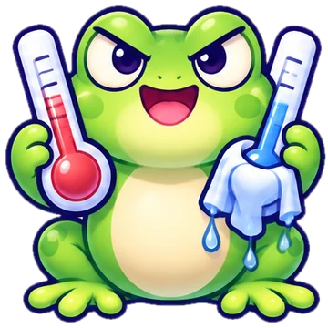
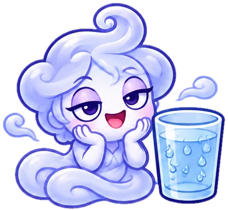
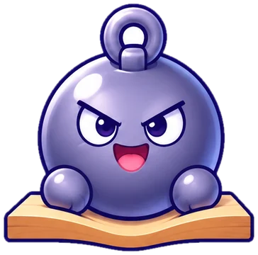
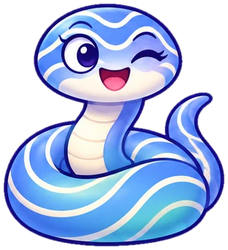
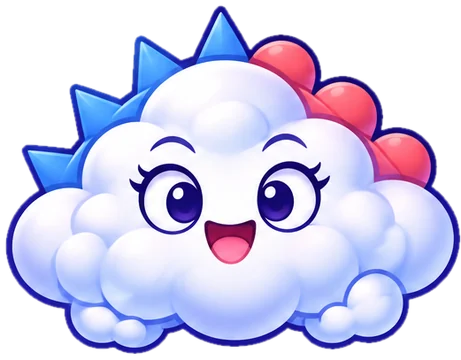
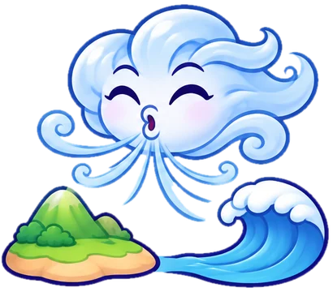
📘 積乱雲：強い上昇気流で縦にのびる雲
🎨 もくもく縦長の雲、頭に雷マーク
保存名: img/rikaria/enemy/weather-7.webp
📘 寒冷前線：寒気が暖気の下にもぐりこむ
🎨 青い三角のトゲを背中に並べたヘビ型
保存名: img/rikaria/enemy/weather-8.webp
📘 温暖前線：暖気が寒気の上をはい上がる
🎨 赤い半円のこぶを並べたヘビ型
保存名: img/rikaria/enemy/weather-9.webp
📘 飽和水蒸気量：空気が含める最大の水蒸気量
🎨 コップから水があふれそうなしずくの体
保存名: img/rikaria/enemy/weather-10.webp
📘 気圧配置：西高東低（冬型）など
🎨 高と低の雲の帽子をかぶったふたご
保存名: img/rikaria/enemy/weather-11.webp
📘 停滞前線（梅雨前線）
🎨 雨のしずくをぶら下げた長いヘビ
保存名: img/rikaria/enemy/weather-12.webp
📘 台風：熱帯低気圧が発達したもの
🎨 渦巻きの体と真ん中の目がかわいい
保存名: img/rikaria/enemy/weather-r1.webp
📘 偏西風：日本上空の西から東の風
🎨 西から東へ流れるリボンを持つ風の精
保存名: img/rikaria/enemy/weather-r2.webp
📘 オーロラ（発展）：高緯度の夜空の光のカーテン
🎨 虹色の光のカーテンをまとった妖精
保存名: img/rikaria/enemy/weather-sr.webp
電気｜雷鳴の発電所
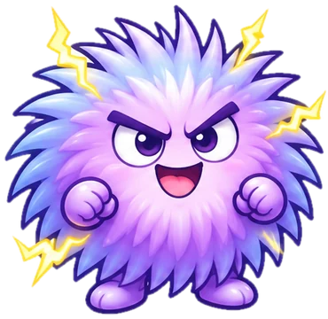
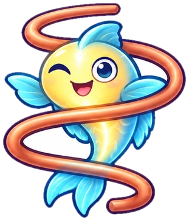
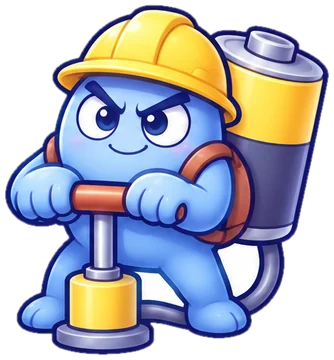
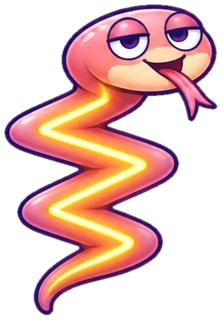
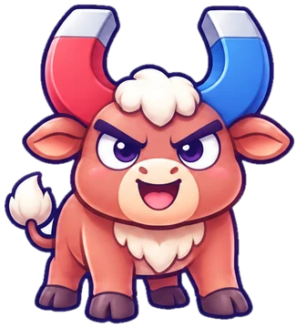
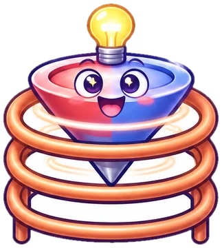
📘 電力＝電圧×電流（単位W）
🎨 電球の頭にW印のマント
保存名: img/rikaria/enemy/electric-7.webp
📘 ショート回路：抵抗がなく大電流が流れる危険
🎨 短い導線でびりびり慌てるネズミ
保存名: img/rikaria/enemy/electric-8.webp
📘 オームの法則：電圧は電流に比例
🎨 Ωマークの体のずんぐりモンスター
保存名: img/rikaria/enemy/electric-9.webp
📘 陰極線（電子線）：－極から出る電子の流れ
🎨 ブラウン管風の体から光線を出す
保存名: img/rikaria/enemy/electric-10.webp
📘 磁界の向き：N極から出てS極に入る
🎨 U字磁石の体に矢印のひげ
保存名: img/rikaria/enemy/electric-11.webp
📘 交流：向きが周期的に変わる電流
🎨 波のしっぽを左右にゆらすウナギ
保存名: img/rikaria/enemy/electric-12.webp
📘 ファラデー：電磁誘導を発見
🎨 コイルを巻いた体に磁石の杖
保存名: img/rikaria/enemy/electric-r1.webp
📘 エジソン：電球を実用化
🎨 フィラメントが光る電球型モンスター
保存名: img/rikaria/enemy/electric-r2.webp
📘 雷：雲にたまった静電気の放電
🎨 金色の稲妻をまとう小さな竜
保存名: img/rikaria/enemy/electric-sr.webp
イオン｜水晶の電解湖
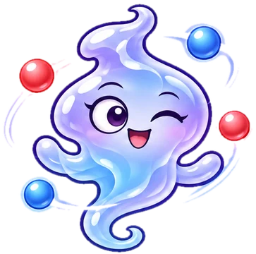
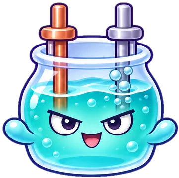
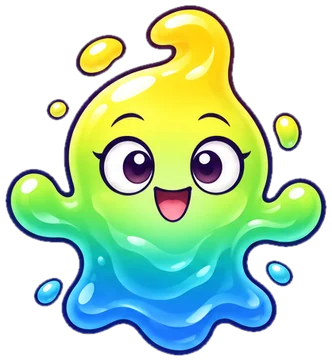
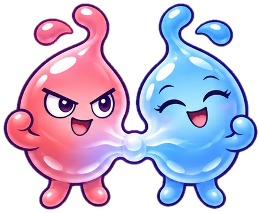
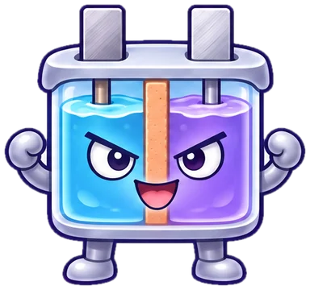
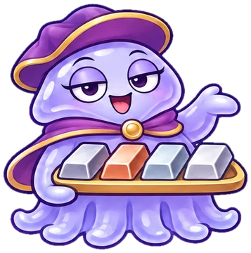
📘 原子核：陽子と中性子からなる
🎨 中心の玉の周りを電子がくるくる回る
保存名: img/rikaria/enemy/ion-7.webp
📘 BTB溶液：酸性で黄・中性で緑・アルカリ性で青
🎨 三色グラデーションのしずく体
保存名: img/rikaria/enemy/ion-8.webp
📘 塩酸：塩化水素の水溶液、強い酸性
🎨 黄色いしずくに酸っぱい顔
保存名: img/rikaria/enemy/ion-9.webp
📘 水酸化ナトリウム：アルカリ性
🎨 青いぬるぬるしずくのスライム
保存名: img/rikaria/enemy/ion-10.webp
📘 陽イオン：電子を失って＋の電気を帯びる
🎨 ＋マークのほっぺの元気な玉
保存名: img/rikaria/enemy/ion-11.webp
📘 陰イオン：電子を受け取って－の電気を帯びる
🎨 －マークのほっぺのおっとり玉
保存名: img/rikaria/enemy/ion-12.webp
📘 アレニウス：電離説を唱えた
🎨 ＋と－の玉をジャグリングする科学者風
保存名: img/rikaria/enemy/ion-r1.webp
📘 ボルタ：電池を発明
🎨 銅と亜鉛の円板を積み重ねた塔型
保存名: img/rikaria/enemy/ion-r2.webp
📘 塩化ナトリウムの立方体の結晶
🎨 真っ白に輝く立方体結晶の体
保存名: img/rikaria/enemy/ion-sr.webp
天体｜星降る天文台
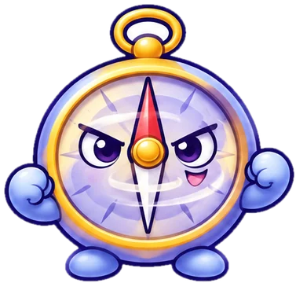
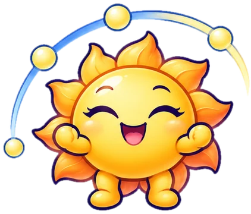
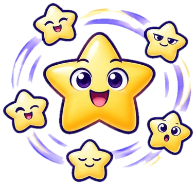
📘 黒点：太陽表面の温度が低い部分
🎨 オレンジの球体にほくろのような黒い点
保存名: img/rikaria/enemy/space-7.webp
📘 恒星：自ら光を出す星
🎨 五芒星形のまぶしい星の子
保存名: img/rikaria/enemy/space-8.webp
📘 衛星：惑星のまわりを回る天体
🎨 小さな月を連れて回る丸いモンスター
保存名: img/rikaria/enemy/space-9.webp
📘 年周運動：星座が1年で一周して見える
🎨 星座盤を回すフクロウ
保存名: img/rikaria/enemy/space-10.webp
📘 地球型惑星と木星型惑星
🎨 しま模様の大きな惑星と岩の小さな惑星のコンビ
保存名: img/rikaria/enemy/space-11.webp
📘 よいの明星：夕方西の空に見える金星
🎨 夕焼け色のマントの小さな星
保存名: img/rikaria/enemy/space-12.webp
📘 ガリレオ：望遠鏡で木星の衛星を発見
🎨 望遠鏡を片目に当てた星の学者風
保存名: img/rikaria/enemy/space-r1.webp
📘 コペルニクス：地動説
🎨 太陽を真ん中に惑星が回るモビールを持つ
保存名: img/rikaria/enemy/space-r2.webp
📘 すい星：太陽に近づくと尾をのばす
🎨 青白く長い尾を引く氷の玉
保存名: img/rikaria/enemy/space-sr.webp
遺伝｜螺旋の神殿
📘 体細胞分裂：細胞が2つに分かれてふえる
🎨 まん中がくびれて2つに分かれかけた丸いつぶ
保存名: img/rikaria/enemy/heredity-7.webp
📘 無性生殖：さし木・分裂など親と同じ形質
🎨 さし木の枝から芽が出たちびっこ
保存名: img/rikaria/enemy/heredity-8.webp
📘 顕性形質（優性）：子に現れる形質
🎨 丸い大きな豆の体に王冠
保存名: img/rikaria/enemy/heredity-9.webp
📘 潜性形質（劣性）：子に現れず孫に現れる形質
🎨 しわしわ豆が葉の陰からこっそりのぞく
保存名: img/rikaria/enemy/heredity-10.webp
📘 減数分裂：生殖細胞をつくる分裂で染色体数が半分
🎨 半分に割れたハート形の細胞
保存名: img/rikaria/enemy/heredity-11.webp
📘 相同器官：形やはたらきが違ってももとは同じ骨格
🎨 鳥の羽・クジラのひれ・人の手を持つ合体モンスター
保存名: img/rikaria/enemy/heredity-12.webp
📘 メンデル：エンドウで遺伝の規則性を発見
🎨 エンドウのさやを持つ修道士風
保存名: img/rikaria/enemy/heredity-r1.webp
📘 ダーウィン：進化論（ガラパゴスの観察）
🎨 フィンチのくちばしの帽子、ノートを持つ
保存名: img/rikaria/enemy/heredity-r2.webp
📘 DNAの二重らせん構造（発展）
🎨 ねじれたはしご状のらせんが輝く体
保存名: img/rikaria/enemy/heredity-sr.webp
エネルギー｜歯車の機関城
📘 位置エネルギー：高い所にある物体がもつ
🎨 高い台の上でドヤ顔のおもり
保存名: img/rikaria/enemy/energy-7.webp
📘 運動エネルギー：速さと質量が大きいほど大きい
🎨 車輪の足で走るボール
保存名: img/rikaria/enemy/energy-8.webp
📘 伝導：物体の中を熱が伝わる
🎨 赤く熱くなった鉄の棒の体
保存名: img/rikaria/enemy/energy-9.webp
📘 慣性の法則：力がはたらかないと運動を続ける
🎨 ローラースケートで止まれないペンギン
保存名: img/rikaria/enemy/energy-10.webp
📘 エネルギー変換効率：一部は熱などになる
🎨 電球型、半分は光・半分は熱で汗をかく
保存名: img/rikaria/enemy/energy-11.webp
📘 浮力：水中の物体にはたらく上向きの力
🎨 浮き輪をつけてぷかぷか浮く
保存名: img/rikaria/enemy/energy-12.webp
📘 ジュール：熱と仕事の関係、単位J
🎨 羽根車を回す温度計を持った紳士風
保存名: img/rikaria/enemy/energy-r1.webp
📘 ワット：蒸気機関を改良、単位W
🎨 やかんの蒸気でくるくる回る歯車
保存名: img/rikaria/enemy/energy-r2.webp
📘 永久機関は作れない（エネルギー保存の法則）
🎨 回り続ける夢の歯車、虹色に輝く
保存名: img/rikaria/enemy/energy-sr.webp